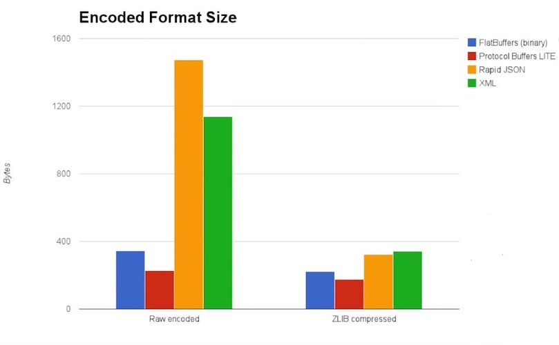
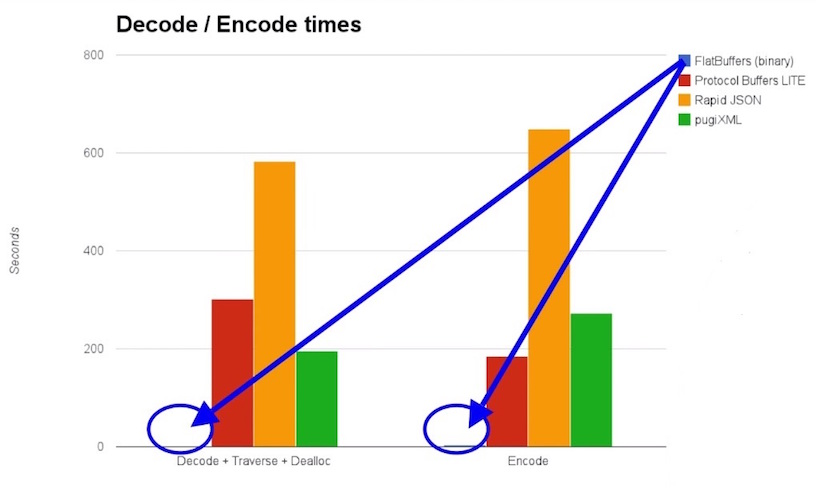

FlatBuffers 是一个 Google 开源的跨平台序列化工具，支持 C, C++, C#, Go, Java, JavaScript, PHP, Python 等，好强大的感觉。
FlatBuffers is an efficient cross platform serialization library for C++, C#, C, Go, Java, JavaScript, PHP, and Python. It was originally created at Google for game development and other performance-critical applications.
什么时候使用 FlatBuffers?
- FlatBuffers 的反序列化速度非常快，在交互很频繁的场景下，例如游戏服务器中它的优势非常大
- 使用 TcpSocket 通讯时序列化消息的 payload，尤其时涉及到多语言，多平台时
下面 2 图为 FlatBuffers 和其他几个常用的序列化工具的比较:


其实 FlatBuffers 更应该和 Protobuf 比较，他们才是一个位面的工具，虽然 FlatBuffers 序列化后的数据比 Protobuf 的大那么一丢丢，运行时占用的内存是 Protobuf 的 2 倍左右，但是反序列化很速度却快很多，在硬件白菜价的今天，时间效率大多数时候更有吸引力，总体来说，更推荐 FlatBuffers。
这里主要是介绍 FlatBuffers 的入门程序，演示 Java 使用 FlatBuffers 序列化和反序列化类 Person，然后使用 Qt(C++) 反序列化 Person
- 安装 FlatBuffers 代码生成工具
- 下载 FlatBuffers 源码
- 定义 Person 的 schema 文件
- Java 使用 FlatBuffers
- FlatBuffers 编译 schema 文件生成 Java 的 Person 类
- 序列化 Person
- 反序列化 Person (可以是 Qt 生成的)
- Qt 使用 FlatBuffers
- FlatBuffers 编译 schema 文件生成 cpp 的 Person 类
- 反序列化 Person (可以是 Java 生成的)
- 序列化 Person
安装 FlatBuffers 代码生成工具
需要使用 FlatBuffers 的 flatc 把 schema 文件生成对应的代码，例如 Java 的类:
- Mac:
brew install flatbuffers - Windows: 到 https://github.com/google/flatbuffers/releases 下载安装
下载 FlatBuffers 源码
使用 FlatBuffers 时引入相关的代码即可，不需要额外的库，例如 DLL 等，到 https://github.com/google/flatbuffers 下载
- cpp 需要用到
include目录下的flatbuffers/flatbuffers.h - Java 需要用到
java目录下的文件
定义 Person 的 schema 文件
保存为 Person.fbs
1 | namespace com.xtuer.bean; |
Java 使用 FlatBuffers
1 | ├── main |
上面是项目的目录结构，下面具体介绍创建项目的过程:
FlatBuffers 编译 schema 文件生成 Java 的 Person 类:
flatc --java Person.fbs，生成1
2
3
4└── com
└── xtuer
└── bean
└── Person.java复制上面生成的
com目录到项目中复制 FlatBuffers 源码中
java目录下的com目录到项目中创建测试用的类 TestFlatBuffer
1
2
3
4
5
6
7
8
9
10
11
12
13
14
15
16
17
18
19
20
21
22
23
24
25
26
27
28
29
30
31
32
33
34
35
36
37
38
39
40
41import com.google.flatbuffers.FlatBufferBuilder;
import com.xtuer.bean.Person;
import org.junit.Test;
import java.io.FileInputStream;
import java.io.FileOutputStream;
import java.nio.ByteBuffer;
public class TestFlatBuffer {
private static final String FILE_NAME = "/Users/Biao/Desktop/person.data";
public void testWrite() throws Exception {
// [1] 创建 Person 对象
FlatBufferBuilder builder = new FlatBufferBuilder();
int root = Person.createPerson(builder, builder.createString("道格拉斯·狗"), 30);
builder.finish(root);
// [2] 序列化 Person 对象为字节码
byte[] buffer = builder.sizedByteArray();
// [3] 保存字节码到文件，也可以进行网络传输
FileOutputStream out = new FileOutputStream(FILE_NAME);
out.write(buffer);
out.close();
}
public void testRead() throws Exception {
// [1] 从文件读取字节码，也可以是使用 Socket 传输得到的
byte[] buf = new byte[1024];
FileInputStream in = new FileInputStream(FILE_NAME);
in.read(buf);
in.close();
// [2] 把字节码反序列化为 Person 对象
ByteBuffer buffer = ByteBuffer.wrap(buf);
Person person = Person.getRootAsPerson(buffer);
System.out.println("Name: " + person.name() + ", Age: " + person.age());
}
}执行
testWrite()，序列化 Person 对象生成/Users/Biao/Desktop/person.data执行
testRead()，反序列化得到 Person 对象，输出:1
Name: 道格拉斯·狗, Age: 30
Qt 使用 FlatBuffers
1 | ├── FlatBuffer.pro |
上面是项目的目录结构，下面具体介绍创建项目的过程:
FlatBuffers 编译 schema 文件生成 cpp 的 Person 类:
flatc --cpp Person.fbs1
Person_generated.h
复制上面生成的
Person_generated.h到项目中复制 FlatBuffers 源码中
include目录 下的flatbuffers/flatbuffers.h目录到项目中创建 main.cpp
1
2
3
4
5
6
7
8
9
10
11
12
13
14
15
16
17
18
19
20
21
22
23
24
25
26
27
28
29
30
31
32
33
34
35
36
37
38
39
40
41
42
43
44
45
46
47
48
49
50
51
52
53
54
55
56
57
58
59
60
61
62
63
void testRead();
void testWrite();
void writeToFile(const char *data, int size);
QByteArray readFromFile();
int main(int argc, char *argv[]) {
Q_UNUSED(argc)
Q_UNUSED(argv)
testRead();
return 0;
}
void testWrite() {
flatbuffers::FlatBufferBuilder builder;
// [1] 创建 Person 对象
QByteArray nameBA = QString("道格拉斯·狗").toUtf8();
auto name = builder.CreateString(nameBA.constData()); // 不能直接用 QString("道格拉斯·狗").toUtf8().constData()
auto root = com::xtuer::bean::CreatePerson(builder, name, 30);
com::xtuer::bean::FinishPersonBuffer(builder, root);
// [2] 序列化 Person 对象为字节码
const char *buffer = reinterpret_cast<const char *>(builder.GetBufferPointer());
// [3] 保存字节码到文件，也可以进行网络传输
writeToFile(buffer, builder.GetSize());
}
void testRead() {
// [1] 从文件读取字节码，也可以是使用 Socket 传输得到的
QByteArray data = readFromFile();
// [2] 把字节码反序列化为 Person 对象
const com::xtuer::bean::Person *p = com::xtuer::bean::GetPerson(data.constData());
qDebug() << QString("Name: %1, Age: %2").arg(QString(p->name()->c_str())).arg(p->age()); // OK: 默认使用 UTF-8 创建 QString
qDebug() << QString::fromUtf8(p->name()->c_str()); // OK: 证明 FlatBuffer 使用的是 UTF-8 存储字符串
qDebug() << QString::fromLocal8Bit(p->name()->c_str()); // OK: Mac 默认就是使用 UTF-8
qDebug() << QString::fromLatin1(p->name()->c_str()); // Error: 因为不是使用 Latin1 存储字符串
}
void writeToFile(const char *data, int size) {
QFile file("/Users/Biao/Desktop/person.data");
if (!file.open(QIODevice::WriteOnly)) { return; }
file.write(data, size);
}
QByteArray readFromFile() {
QFile file("/Users/Biao/Desktop/person.data");
if (!file.open(QIODevice::ReadOnly)) { return QByteArray(); }
return file.readAll();
}运行程序，输出(中文也没问题，太棒了)
1
2
3
4"Name: 道格拉斯·狗, Age: 30"
"道格拉斯·狗"
"道格拉斯·狗"
"é\u0081\u0093æ ¼æ\u008B\u0089æ\u0096¯Â·ç\u008B\u0097"执行 Qt 的
testWrite()，然后执行 Java 的testRead()，都能正常的序列化和反序列化
思考
上面的例子展示了 Java 使用 FlatBuffers 序列化对象存储到文件，然后 Qt 在从文件反序列化得到数据，或许有人要问，我还是不知道 TcpSocket 中怎么使用 FlatBuffers 传输数据啊？
其实不管像上面使用文件交互数据还是使用 TcpSocket 传输交互数据，他们交互的都是 FlatBuffers 生成的二进制数据，所以 TcpSocket 的话直接传输 FlatBuffers 生成的二进制数据就可以了(一般存储的都是消息本身，即 payload)，当接收到数据后用 FlatBuffers 反序列化，文件或者 TcpSocket 只是交互的方式，交互的内容都是数据，当然 TcpSocket 通讯中帧的格式，粘包等问题就不属于 FlatBuffers 的范畴了。
参考资料
这里只是介绍了 FlatBuffers 的入门程序，演示了怎么使用 FlatBuffers，更多的内容请参考: